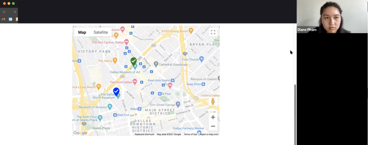
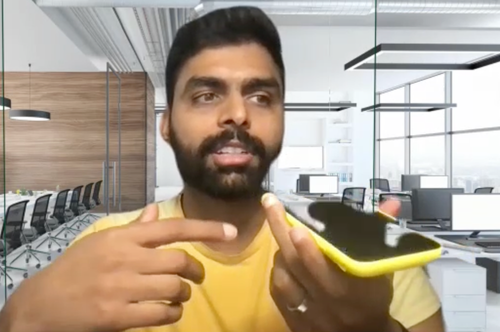
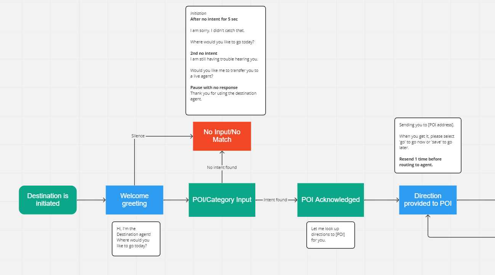

Evaluating a voice bot for drivers and uncovering what they needed next.
A major automotive client was developing an in-car voice bot to replace traditional call-center routing for navigation support. Rather than drivers calling in for directions or destination help, the bot would handle the entire interaction hands-free, in the vehicle.
I led usability research to evaluate the prototype's conversation design, identify where the experience broke down, and surface what else drivers expected a navigation assistant to be able to do.
I recruited 10 participants and ran two rounds of remote moderated usability testing over five weeks. Participants performed tasks using the voice bot on mobile to simulate in-car use and were asked follow-up questions to understand their experience. I also asked about prior experience with voice assistants to understand expectations coming in.


Remote moderated sessions — participants interacted with the voice bot on mobile to simulate in-car conditions.

Conversation flow diagram mapping the bot's decision paths, fallback states, and escalation logic.
Participants thought the bot handled fallbacks efficiently like changing destinations in the middle of a conversation and asking to quickly transfer to a live agent.
Speaking to the bot felt easier than typing on a phone or screen, especially if you were to be in an urgent situation.
Users wanted the bot to confirm destinations with estimated time, distance, and other details before starting navigation. This would help provide more context when driving in unfamiliar areas.
Users described wanting to ask about business hours, nearby gas stations, attractions, and parking. These use cases reflected how the voice bot could enhance their navigation experience.
If I were to do this project again under different circumstances, being able to test the prototype in a car or while driving would be the biggest opportunity. There are so many environmental factors to consider like background noise, other passengers, music, the cognitive load of driving and using the voice bot at the same time, etc. that could add more context to the research insights.